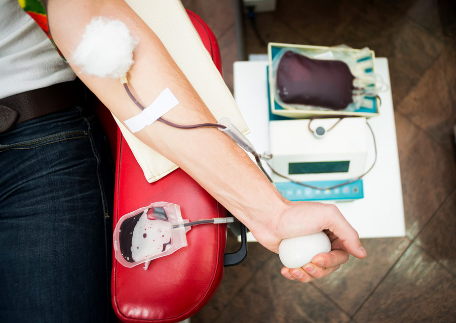

Important Tips When Donating Blood
Before Your donation: Eat Healthy Maintain a healthy iron level in your diet by eating iron rich foods, such as red meat, fish, poultry, beans, spinach, iron-fortified cereals and raisins.
- Get a good night's sleep.
- Drink an extra 16 oz. of water or nonalcoholic fluids before the donation.
- Eat a healthy meal before your donation. Avoid fatty foods, such as hamburgers, fries or ice cream before donating. (Fatty foods can affect the tests we do on your blood. If there is too much fat in your blood, your donation cannot be tested for infectious diseases and the blood will not be used for transfusion.)
- If you are a platelet donor, remember that your system must be free of aspirin for two days prior to donation.
- Remember to bring your donor card, driver's license or two other forms of ID.
- During Your Donation wear clothing with sleeves that can be raised above the elbow.
- Let the person taking your blood know if you have a preferred arm and show them any good veins that have been used successfully in the past to draw blood.
- Relax, listen to music, talk to other donors or read during the donation process.
After Your Donation
Take the time to enjoy a snack and a drink in the refreshments area immediately after donating.
- Drink an extra four (8 ounce) glasses of liquids and avoid alcohol over the next 24 hours.
- Keep the strip bandage on for the next several hours.
- To avoid a skin rash, clean the area around the strip bandage with soap and water.
- Do not do any heavy lifting or vigorous exercise for the rest of the day.
- If the needle site starts to bleed, apply pressure to it and raise your arm straight up for about 5-10 minutes or until bleeding stops.
- If you experience dizziness or lightheadedness after donation, stop what you are doing and sit down or lie down until you feel better. Avoid performing any activity where fainting may lead to injury for at least 24 hours.